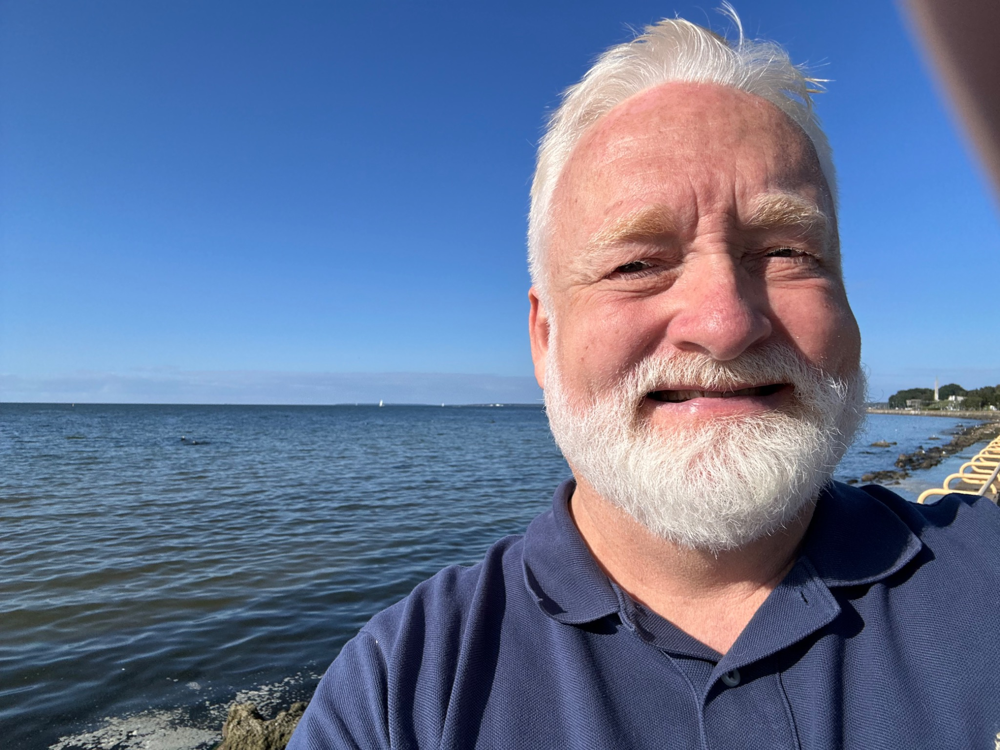

Prof. Dr. · Humboldt-Universität zu Berlin
Christian
Rathmann.
Sign languages in their structure, social use and applications.
I work across sign language linguistics, Deaf Studies and interpreting studies. I connect linguistic analysis and language learning with Deaf language rights, interpreting practice and the development of research methods and resources.
Professor and Head of Deaf Studies and Sign Language Interpreting, Humboldt-Universität zu Berlin
Visiting Professor, Tallinn University

LinguisticsDeaf StudiesInterpreting StudiesResearch Methods
Research
Four research areas
My work connects linguistic structure and use with language rights, interpreting practice and empirical methods.
01 / Linguistics
Structure, function and use
Grammar and meaning, variation, acquisition, teaching and the application of sign languages in education and society.
Sign language linguistics 02 / Deaf StudiesCommunities and language rights
Deaf knowledge and agency, linguistic participation, and the recognition and rights of sign languages.
Deaf Studies 03 / Interpreting StudiesInterpreting and translation
Processes, training and professional practice between sign, spoken and written languages.
Interpreting Studies 04 / MethodsData and language resources
Corpora, digital language resources, language assessment and research ethics for visual language data.
Research methodsCollaborative work
Research in practice
Long-term collaborations connect scholarship with language resources, education and professional change.
01
All projects and resources Tallinn University · Research lab
02EVKUR
Research on Estonian Sign Language, its communities, learning and teaching, and sustainable language resources.
European Centre for Modern Languages · 2024–27
03DeafSign
European work on equitable sign language learning for deaf children and families, refugees and heritage signers.
Research · Professional practice
Deaf mediators, interpreters and translators
Examining professional roles, education and the visibility of Deaf expertise in mediated communication.
Writing
Selected work
Publications span sign language grammar, multilingual practice, language rights and interpreting. The full record is available through my academic profiles.
Browse selected publicationsThe Routledge handbook of sign language translation and interpreting
Contact
Let’s connect.
For research collaboration, doctoral supervision and invitations, please use my institutional email.
christian.rathmann@hu-berlin.de
Humboldt-Universität zu Berlin · Department of Deaf Studies and Sign Language Interpreting